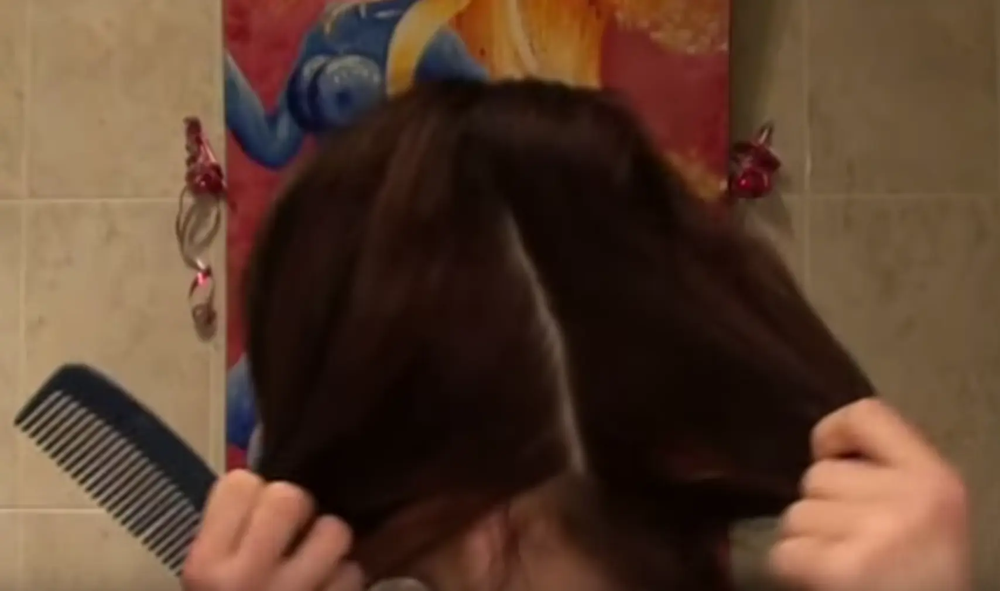
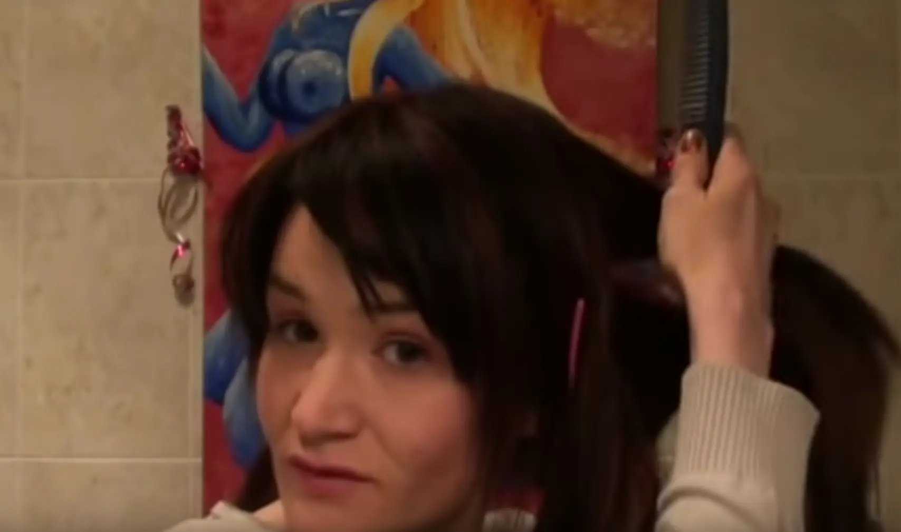
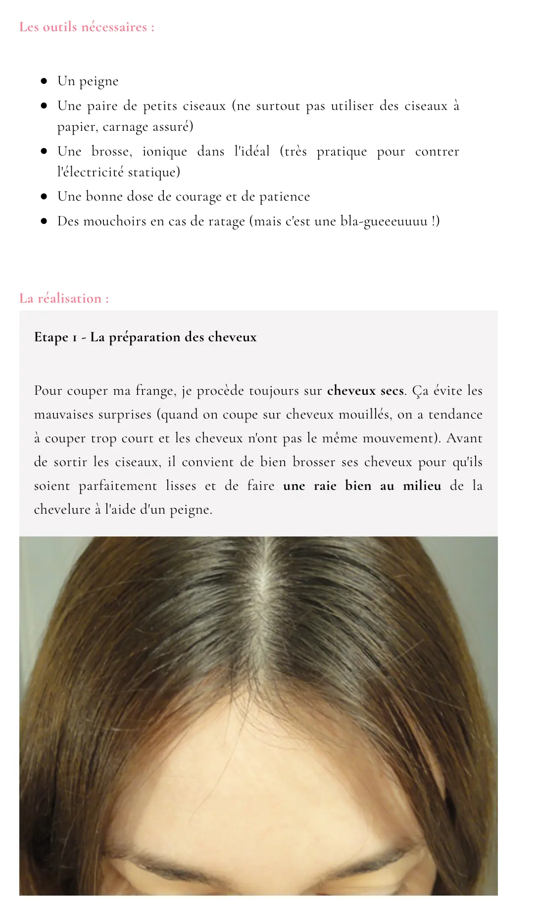
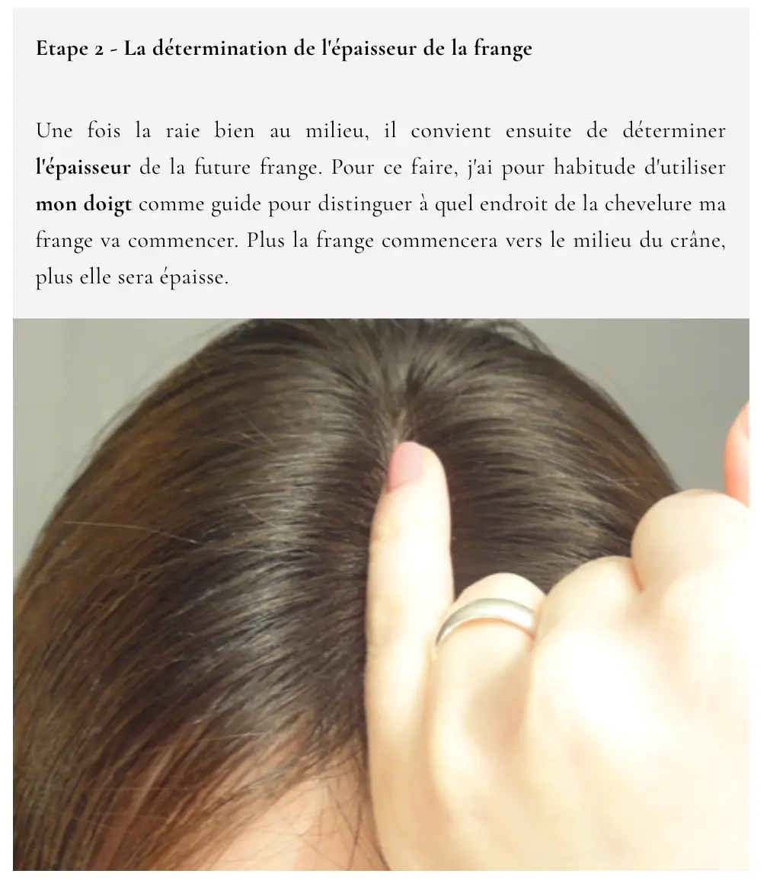
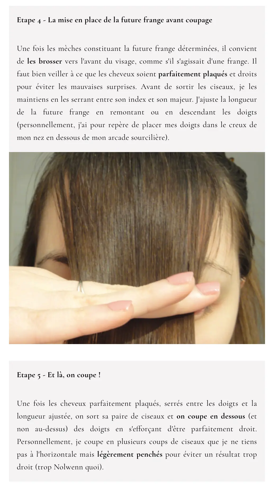
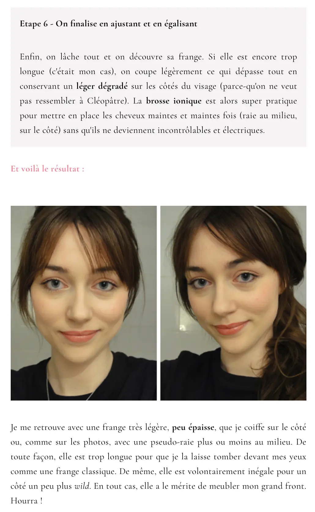
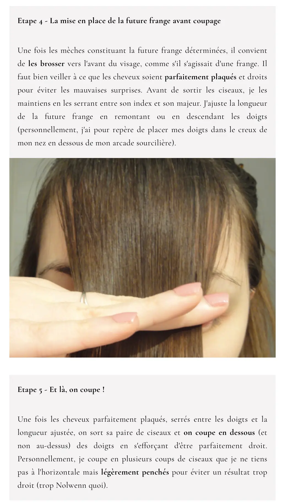
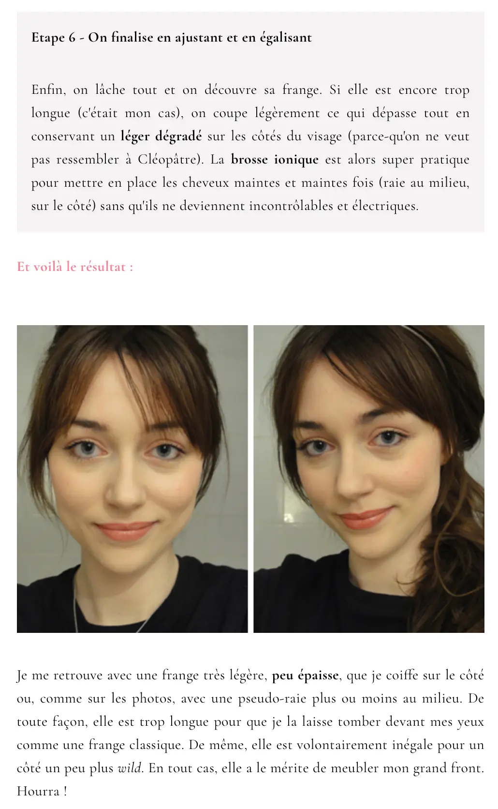

Me couper les cheveux | #activites | * | @6.webp:Mon portait.
Mémo pour me souvenir de la technique pour me couper les cheveux avec léger dégradé et pour couper une « frange rideau ».
Desépaissir
- Faire une raie bien au milieu. Attacher un côté de la chevelure pour travailler sur le deuxième.
- Sur le côté à travailler, partager en deux pour faire une raie vers l’arrière, à environ 4 cm de celle du milieu.

- Attacher les cheveux de devant et partager la mèche restante en 2 horizontalement.

- Couper plusieurs fois dans la bande du bas avec des ciseaux sculpteurs (en laissant glisser la lame pour que le surplus de cheveux s’en aille).
- Faire pareil avec la mèche gardée au-dessus, en coupant moins.
- Idem pour le deuxième côté.
Le dégradé
Autre technique de dégradé
- Faire une raie au milieu.
- Faire deux couettes égales de chaque côté, en les serrant vers le devant, le long des joues.
- Descendre les élastiques à hauteur équivalente des deux côtés (au niveau des épaules).
- Couper sous les élastiques, par petites touches, avec le ciseau sculpteur.
La frange


 



Petite note : couper plus bas que ce qu’elle indique.
Et voici le résultat sur ma trombine.